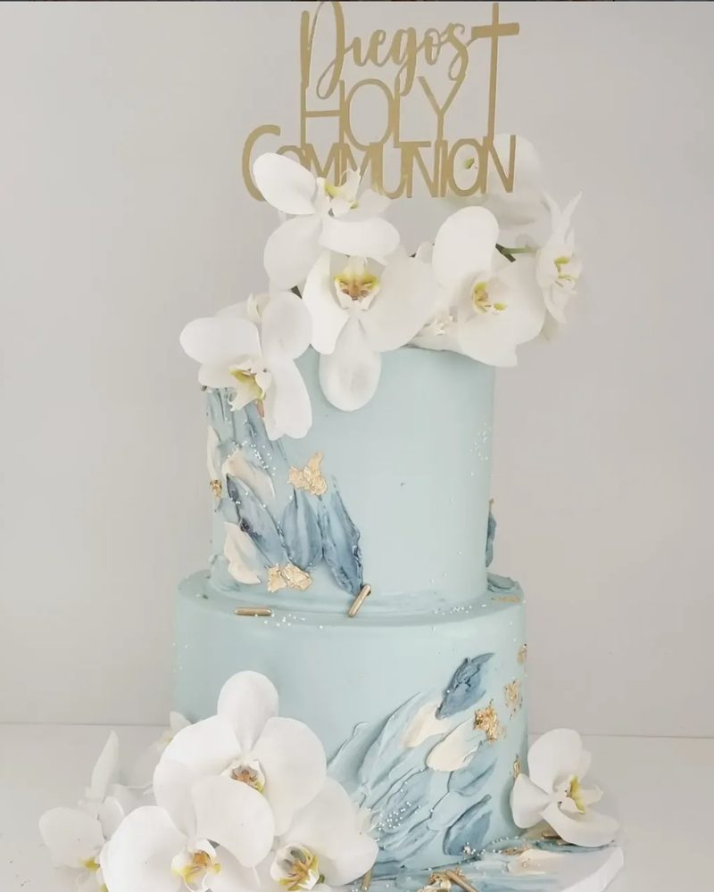

Pastelería para celebrar, regalar y compartir.
Desde pasteles diseñados para momentos especiales hasta galletas, cupcakes y postres que combinan diseño, sabor y atención al detalle.
Desde pasteles diseñados para momentos especiales hasta galletas, cupcakes y postres que combinan diseño, sabor y atención al detalle.
Nuestras líneas

De diseño, para cada ocasión, clásicos y personalizados. También nuestra cake tasting box.
Ver pasteles →Estilo New York, gourmand, americanas, linzer, alfajores, cottage y gluten free.
Ver galletas →Clásicos pick your color, gourmet y personalizados.
Ver cupcakes →Spooning collection: tiramisú, cheesecakes y tres leches, más postres individuales.
Ver postres →Cake tasting box
Una selección de 5 porciones de nuestros pasteles para que pruebes, descubras tus favoritos y elijas con seguridad el sabor perfecto para tu celebración. Eliges 5 entre 12 sabores.
Pedir mi tasting boxCupcakes clásicos
Elige el color del frosting y crea tu combinación. Packs de 2, 4, 6 o 12, en vainilla o chocolate, con relleno de dulce de leche, chocolate o fresa.
Arma tus cupcakesCorporativo
Regalos para clientes y colaboradores con empaque, colores y mensajes personalizados.
Solicitar cotización corporativaEventos
Bodas, cumpleaños, bautizos, graduaciones, lanzamientos y mesas de postres.
Cuéntanos sobre tu eventoDesde 2013
Cupcakes Garden nació con una pasión por la pastelería y por crear productos que acompañaran momentos importantes. Hoy seguimos creciendo sin perder lo que nos caracteriza: el buen gusto, la creatividad y la intención detrás de cada creación.
Conoce nuestra historia